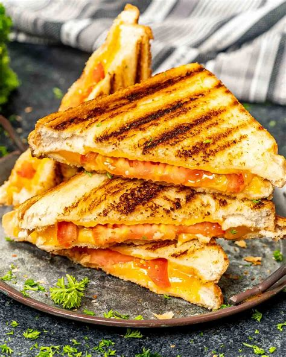

Cheese Toast

Cheese toast is one of the best ROI meals ever, its so simple, yet theres so many options, wherever you choose to make it with only bread and cheese, or add another 5 ingredients, it'll always hit good especially with a Caseoh video like this CaseOh Video
Manditory Ingredients:
Example things you can slap in:
- Tomato
- Any seasoning
- cheese(the white salty type)
- meat
- Potato?
- soup?!
How to make it...
- Take one slice of bread and put it down
- Put a slice of cheese on top, a little smaller than the bread slice
- Put whatever else you want in there
- And finally you can close it with anther piece of bread
- And the actual final step is to put it in the toaster for 5 to 15 minutes
- Enjoy with Case
Back to Main Page